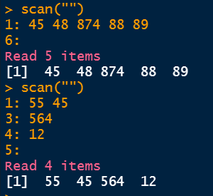
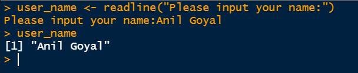
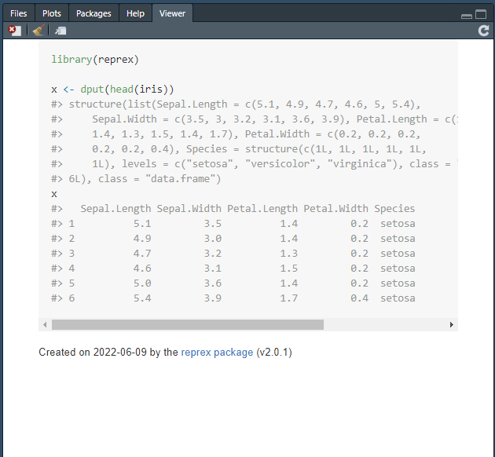

9 Importing and Exporting Data
Audit data comes from outside. A district treasury sends a file of every voucher it passed in a month. A works division sends its register as an Excel workbook, with a sheet for each sub-division. A scheme’s portal gives a download of its beneficiaries. Before we can check anything, this data has to come into R, whole and correct.
This step is not as simple as it looks. A file read carelessly can lose payments without any error. An amount written as “1,25,000” can quietly become a missing value, and drop out of every total. A DDO code like 0204015 can lose its leading zero and stop matching the master. So reading a file is itself an audit step. The auditor must be able to show that the data analysed is the data received, row for row and rupee for rupee.
After the analysis, the results travel the other way. Exception lists, summaries and charts are exported, for the working papers, for the audit report, and for the auditee’s reply. In this chapter we learn both directions. We first see the base R functions for reading and writing files, and then the tidyverse packages which do these jobs faster and more safely. We end with the most important point for an auditor, checking that nothing went wrong while reading, and reconciling a treasury file with its covering letter.
Prerequisites
9.1 Our data, files received from a treasury
To practise, we need some files. So let us create them, in a temporary folder given by tempdir(), so that nothing is left behind in our project. There are four files.
-
amarpur_vouchers_apr2024.csv, the vouchers passed by the District Treasury, Amarpur, in April 2024. Each row has the voucher number, the code of the drawing and disbursing officer (DDO), the date of the bill, the head of account, the payee, the mode of payment and the amount in rupees. -
cancelled_cheques.txt, the numbers of cheques reported as cancelled, one on each line. -
covering_letter.txt, the letter sent by the treasury with the file. -
works_register.xlsx, an Excel workbook from a works division, with one sheet for each of two sub-divisions.
Code to create the files used in this chapter
folder <- file.path(tempdir(), "audit_files")
dir.create(folder, showWarnings = FALSE)
set.seed(2024)
n <- 120
ddo_codes <- c("0204015", "0204022", "0204031", "0204047", "0204058")
heads <- c("2054-00-095-01", "2202-01-101-02", "2210-03-103-01", "4059-01-051-03")
payees <- c("Sharma Traders", "Kaveri Infra", "Om Sai Suppliers", "Laxmi Electricals",
"Patel Hardware", "Salaries, establishment", "Gupta Enterprises")
amarpur <- tibble(
voucher_no = sprintf("TV/AMR/%04d", 1:n),
ddo_code = sample(ddo_codes, n, replace = TRUE),
bill_date = format(sort(as.Date("2024-04-01") + sample(0:29, n, replace = TRUE)),
"%d/%m/%Y"),
head = sample(heads, n, replace = TRUE),
payee = sample(payees, n, replace = TRUE),
mode = sample(c("e-payment", "Cheque"), n, replace = TRUE, prob = c(0.85, 0.15)),
amount = round(rlnorm(n, log(80000), 1), -1)
)
# Planted. Three large payments of works contracts
amarpur$amount[c(17, 58, 93)] <- c(1245000, 1870500, 2310000)
amarpur$payee[c(17, 58, 93)] <- "Kaveri Infra"
amarpur_file <- file.path(folder, "amarpur_vouchers_apr2024.csv")
write.csv(amarpur, amarpur_file, row.names = FALSE)
cheque_file <- file.path(folder, "cancelled_cheques.txt")
writeLines(c("504117", "504123", "504188", "504190", "504201", "504236"), cheque_file)
letter_file <- file.path(folder, "covering_letter.txt")
writeLines(c("Office of the Treasury Officer, District Treasury, Amarpur",
"To the Senior Audit Officer",
"Data of vouchers passed in April 2024",
"Number of vouchers passed, 120",
"Total amount in rupees, see the enclosed file"),
letter_file)
xl_file <- file.path(folder, "works_register.xlsx")
write_xlsx(list(
"Amarpur North" = tibble(work_id = c("W-101", "W-102", "W-103"),
work = c("Road repair, Km 4 to 9", "School boundary wall",
"Culvert at Sonpur"),
estimate_lakh = c(42.5, 18.0, 9.6)),
"Amarpur South" = tibble(work_id = c("W-201", "W-202"),
work = c("Panchayat bhawan", "Drain, ward 7"),
estimate_lakh = c(25.0, 12.4))),
xl_file)file.path() joins the parts of a path with /, the separator which works on every computer. The four paths are now saved in amarpur_file, cheque_file, letter_file and xl_file, and we use these names below. With your own data, you would instead give the path of the file on your computer, like "Data/vouchers.csv".
9.2 Importing data with base R
Base R has functions to import nearly any kind of external data. There are also packages which make certain tasks easier, and we will learn some of them later in this chapter. Let us first see the base R functions which are used most often.
Reading tables with read.table() and read.csv()
These two are the most common functions for reading tabular data from plain text files. read.table() reads data whose columns are separated by spaces or another separator. read.csv() reads comma separated values (.csv) files. They have three more cousins.
-
read.csv2()reads csv files where;is the separator and,the decimal mark, as used in many European countries. -
read.delim()reads files where atabcharacter separates the columns and.is the decimal mark. -
read.delim2()reads tab separated files where,is the decimal mark.
The most important arguments of these functions are these.
-
file, the name of the file, with its path, as a string1. -
header, a logical value, telling whether the first line of the file holds the column names. -
sep, the character which separates the columns. -
colClasses, a character vector giving the type of each column, if the columns must be read in these types only. -
skip, the number of lines to skip at the beginning of the file.
Readers may see ?read.table() for the complete list of arguments. Let us read the voucher file of the Amarpur treasury.
[1] 120 7# Check column names
colnames(vouchers)[1] "voucher_no" "ddo_code" "bill_date" "head" "payee"
[6] "mode" "amount" head(vouchers) voucher_no ddo_code bill_date head payee mode
1 TV/AMR/0001 204022 01/04/2024 2202-01-101-02 Patel Hardware e-payment
2 TV/AMR/0002 204058 01/04/2024 2210-03-103-01 Patel Hardware e-payment
3 TV/AMR/0003 204058 01/04/2024 2210-03-103-01 Om Sai Suppliers e-payment
4 TV/AMR/0004 204047 01/04/2024 2054-00-095-01 Laxmi Electricals e-payment
5 TV/AMR/0005 204015 01/04/2024 2202-01-101-02 Laxmi Electricals e-payment
6 TV/AMR/0006 204058 01/04/2024 4059-01-051-03 Kaveri Infra e-payment
amount
1 10040
2 80700
3 124580
4 41620
5 16300
6 110990The data has 120 rows and 7 columns. But look at ddo_code. The first code in the file is 0204022, but R shows 204022. read.csv() has seen digits, and read the column as numbers, so the leading zero is gone. These codes will no longer match the DDO master. The argument colClasses tells R the type of the columns we name.
[1] "0204022" "0204058" "0204058" "0204047" "0204015" "0204058"A file can also be read directly from a web address, without downloading it first, by giving the address in place of the file name.
Use "clipboard" as the file name to paste copied data into R. For example, copy a few rows and columns from an Excel sheet, and run read.delim("clipboard", header = FALSE). This works on Windows.
Reading data into a vector with scan() and readline()
read.table() and its cousins read data into tables. Sometimes we need to read data into a simple vector instead. The two functions scan() and readline() are used for this.
The basic syntax of scan() is as follows.
scan(file = "",
what = double(),
nmax = -1,
...
)The arguments mean this.
-
fileis the name of the file, or a link. -
whatis the type of data to be read. The default is double. -
nmaxis the maximum number of values to be read. The default,-1, means all.
There are many other useful arguments, which can be seen with ?scan. Let us read the numbers of the cancelled cheques.
cancelled <- scan(cheque_file)
cancelled[1] 504117 504123 504188 504190 504201 504236In the console, scan() also says how many items it read. The result is a plain vector, ready to be checked against the cheque issue register with %in% (Chapter 2).
scan() can also read data typed on the keyboard into a vector. Just give a blank string "" as the file name. See this example.

The function readline() does a similar job, but shows a prompt. See this example.

Reading text files with readLines()
The function readLines() reads the lines of a text file (or connection), giving one element for each line. Let us read the covering letter of the treasury.
letter <- readLines(letter_file)
letter[1] "Office of the Treasury Officer, District Treasury, Amarpur"
[2] "To the Senior Audit Officer"
[3] "Data of vouchers passed in April 2024"
[4] "Number of vouchers passed, 120"
[5] "Total amount in rupees, see the enclosed file" Each line is now one element of a character vector, which we can search and subset like any other. We use readLines() again to read the Budget speech in Chapter 50.
9.3 Exporting data with base R
In most analysis, we read external data, and then clean, transform and analyse it, all in R. So we export less often than we import. Still, cleaned data, summaries and exception lists often need to be exported. The following functions meet nearly all such needs.
Writing tables with write.table() and write.csv()
Data frames can be exported with these functions. The latter writes csv files specifically. The syntax is as follows.
write.table(x, file = "", sep = " ", ...)
write.csv(x, file = "", ...)
write.csv2(x, file = "", ...)The arguments mean this.
-
xis the data frame to be exported. -
fileis the file name, with its path. -
sepis the separator. -
...are many more arguments for customised exports. See?write.table()for full details.
For example, let us export the vouchers of ₹10 lakh or more as a csv file, for the working papers. We pick them out exactly as in Chapter 2.
voucher_no payee amount
17 TV/AMR/0017 Kaveri Infra 1245000
58 TV/AMR/0058 Kaveri Infra 1870500
93 TV/AMR/0093 Kaveri Infra 2310000There are 3 such vouchers, for a total of ₹54.26 lakh. By default, write.csv() also writes the row numbers as a first, unnamed column. row.names = FALSE stops this, which is nearly always what we want.
Writing text line by line with writeLines()
Like readLines(), the function writeLines() writes text into a file of the given name, one element on each line. It is handy for a short note to go with an exported file.
[1] "Vouchers of Rs 10 lakh or more, District Treasury Amarpur, April 2024"
[2] "Number of vouchers, 3" Getting the code for an object with dput()
This function prints the code which would recreate a given R object. It is particularly useful when asking for help online. For example, on Stack Overflow, a question should include reproducible data. Please also refer to Section 9.6. Let us make up three rows of voucher data and see.
my_data <- data.frame(voucher_no = c("TV-0001", "TV-0002", "TV-0003"),
amount = c(18500, 125000, 9800))
dput(my_data)structure(list(voucher_no = c("TV-0001", "TV-0002", "TV-0003"
), amount = c(18500, 125000, 9800)), class = "data.frame", row.names = c(NA,
-3L))And to recreate someone else’s data from their dput() output, we simply run it.
voucher_no amount
1 TV-0001 18500
2 TV-0002 125000
3 TV-0003 9800Never share real audit data this way. Make up a few rows of similar data instead, as we did here. Audit data often holds names, account numbers and other personal details, which must not be posted on a public forum.
9.4 Reading and writing with packages
9.4.1 Package readr
The readr package2 is part of the core tidyverse, and is loaded with library(tidyverse). It has a counterpart for each of the reading and writing functions of base R.
| Base R | readr | Uses |
|---|---|---|
| read.table | read_table | Reading tables separated by white space |
| read.csv | read_csv | Reading CSV file with comma as sep |
| read.csv2 | read_csv2 | Reading CSV file with semi-colon as sep |
| read.delim | read_tsv | Reading tab delimited file |
| -- | read_delim | Reading files with any delimiter |
| read.fwf | read_fwf | Reading fixed width files |
| -- | write_delim | Writing files with any delimiter |
| write.csv | write_csv | Writing files with comma delimiter |
| write.csv2 | write_csv2 | Writing files with semi-colon delimiter |
| -- | write_tsv | Writing a tab delimited file |
What is the difference between the two sets? Firstly, the readr functions are much faster, which matters for large files. Secondly, they report the problems they meet while reading, as we will see shortly. And thirdly, they never turn text into factors, or change column names, behind our back. Let us read the same voucher file with read_csv().
read_csv(amarpur_file)Rows: 120 Columns: 7
── Column specification ────────────────────────────────────────────────────────
Delimiter: ","
chr (6): voucher_no, ddo_code, bill_date, head, payee, mode
dbl (1): amount
ℹ Use `spec()` to retrieve the full column specification for this data.
ℹ Specify the column types or set `show_col_types = FALSE` to quiet this message.# A tibble: 120 × 7
voucher_no ddo_code bill_date head payee mode amount
<chr> <chr> <chr> <chr> <chr> <chr> <dbl>
1 TV/AMR/0001 0204022 01/04/2024 2202-01-101-02 Patel Hardware e-pa… 10040
2 TV/AMR/0002 0204058 01/04/2024 2210-03-103-01 Patel Hardware e-pa… 80700
3 TV/AMR/0003 0204058 01/04/2024 2210-03-103-01 Om Sai Suppliers e-pa… 124580
4 TV/AMR/0004 0204047 01/04/2024 2054-00-095-01 Laxmi Electricals e-pa… 41620
5 TV/AMR/0005 0204015 01/04/2024 2202-01-101-02 Laxmi Electricals e-pa… 16300
6 TV/AMR/0006 0204058 01/04/2024 4059-01-051-03 Kaveri Infra e-pa… 110990
7 TV/AMR/0007 0204015 01/04/2024 2202-01-101-02 Salaries, establ… e-pa… 82870
8 TV/AMR/0008 0204022 01/04/2024 4059-01-051-03 Laxmi Electricals e-pa… 165110
9 TV/AMR/0009 0204022 02/04/2024 2054-00-095-01 Salaries, establ… e-pa… 363250
10 TV/AMR/0010 0204058 02/04/2024 2210-03-103-01 Om Sai Suppliers e-pa… 25320
# ℹ 110 more rowsNotice that the type of each column has been printed. readr guesses the types from the first 1,000 rows. Here it has kept ddo_code as text (chr), because the values begin with a zero. But it has also read bill_date as text, since it does not recognise dates written day first. If the guesses are not what we want, we use the argument col_types. We can see the guessed types with spec(), and modify them for use in col_types. See this example.
Rows: 120 Columns: 7
── Column specification ────────────────────────────────────────────────────────
Delimiter: ","
chr (6): voucher_no, ddo_code, bill_date, head, payee, mode
dbl (1): amount
ℹ Use `spec()` to retrieve the full column specification for this data.
ℹ Specify the column types or set `show_col_types = FALSE` to quiet this message.cols(
voucher_no = col_character(),
ddo_code = col_character(),
bill_date = col_character(),
head = col_character(),
payee = col_character(),
mode = col_character(),
amount = col_double()
)vouchers <- read_csv(amarpur_file,
col_types = cols(
voucher_no = col_character(),
ddo_code = col_character(),
bill_date = col_date(format = "%d/%m/%Y"),
head = col_character(),
payee = col_character(),
mode = col_factor(levels = c("e-payment", "Cheque")),
amount = col_double()
))
vouchers |> head(3)# A tibble: 3 × 7
voucher_no ddo_code bill_date head payee mode amount
<chr> <chr> <date> <chr> <chr> <fct> <dbl>
1 TV/AMR/0001 0204022 2024-04-01 2202-01-101-02 Patel Hardware e-paym… 10040
2 TV/AMR/0002 0204058 2024-04-01 2210-03-103-01 Patel Hardware e-paym… 80700
3 TV/AMR/0003 0204058 2024-04-01 2210-03-103-01 Om Sai Suppliers e-paym… 124580Now bill_date is a true date, and mode a factor with the two modes of payment. The format "%d/%m/%Y" says that the day comes first, then the month, then the year in four digits, separated by /. We will learn more about such formats in Chapter 16.
Two other arguments are often useful. col_select reads only the columns we need, which saves time and memory with wide files.
# A tibble: 3 × 2
voucher_no amount
<chr> <dbl>
1 TV/AMR/0001 10040
2 TV/AMR/0002 80700
3 TV/AMR/0003 124580locale handles files with other encodings or number formats. For example, files with Hindi or other Indian scripts, saved from older software, may need locale = locale(encoding = "UTF-16LE") or another encoding, to be read correctly.
9.4.2 Package readxl
This package is also part of tidyverse, but has to be loaded separately with library(readxl). It reads Excel files. An Excel file (with extension .xls or .xlsx) can hold several sheets. The functions read_excel(), read_xlsx() and read_xls() read a sheet. The syntax is as follows.
read_excel(path, sheet = NULL, range = NULL, skip = 0, col_types = NULL)The arguments mean this.
-
sheetis the name or number of the sheet. The default is the first sheet. -
rangereads only a block of cells, like"B3:H120". -
skipskips rows at the top, like a title. -
col_types = "text"reads every column as text, which is the safest way to begin with a messy file.
To get the names of all the sheets in an Excel file, we use excel_sheets(). Let us look at the works register.
excel_sheets(xl_file)[1] "Amarpur North" "Amarpur South"read_excel(xl_file, sheet = "Amarpur South")# A tibble: 2 × 3
work_id work estimate_lakh
<chr> <chr> <dbl>
1 W-201 Panchayat bhawan 25
2 W-202 Drain, ward 7 12.4read_excel(xl_file, sheet = 1, range = "A1:B3")# A tibble: 2 × 2
work_id work
<chr> <chr>
1 W-101 Road repair, Km 4 to 9
2 W-102 School boundary wall The first call read the whole of the second sheet, by its name. The second read only the cells A1:B3 of the first sheet, that is the headings and two rows of the first two columns. We read all the sheets of a file together in Chapter 12.
9.4.3 Writing Excel files
readxl cannot write Excel files. For that, the package writexl has a simple function, write_xlsx(). A named list of data frames is written as one sheet each, which is a convenient way to give the auditee all the exception lists in one file.
exceptions_file <- file.path(folder, "exceptions.xlsx")
write_xlsx(list(big_vouchers = vouchers |> filter(amount >= 1e6),
cheque_payments = vouchers |> filter(mode == "Cheque")),
exceptions_file)
excel_sheets(exceptions_file)[1] "big_vouchers" "cheque_payments"filter() keeps the rows meeting a condition. We will learn it properly in Chapter 13. For formatted Excel output, with colours, column widths and formulas, the package openxlsx2 can be used.
9.5 Checking that the data was read correctly
This is the most important step for an auditor, and the one most often skipped. When readr cannot read a value as the type expected, it puts NA in its place and moves on. Only a short message is printed. Let us see this with a small file of payments, written in the way real files often are.
csv_text <- "voucher_no,emp_code,amount,date
PV-01,00123,1250,15/04/2024
PV-02,00456,\"1,25,000\",16/04/2024
PV-03,01789,-,2024-04-17
PV-04,12001,3400.50,NA"
payments <- read_csv(I(csv_text), col_types = cols(amount = col_double()))Warning: One or more parsing issues, call `problems()` on your data frame for details,
e.g.:
dat <- vroom(...)
problems(dat)payments# A tibble: 4 × 4
voucher_no emp_code amount date
<chr> <chr> <dbl> <chr>
1 PV-01 00123 1250 15/04/2024
2 PV-02 00456 NA 16/04/2024
3 PV-03 01789 NA 2024-04-17
4 PV-04 12001 3400. <NA> Here, I() tells read_csv() that the text itself is the data, not a file name. Look at the amount column. The amount of ₹1,25,000, written with Indian commas, has become NA, and so has the -. Both payments have silently disappeared from any total we calculate. problems() lists every value that could not be read.
problems(payments)# A tibble: 2 × 5
row col expected actual file
<int> <int> <chr> <chr> <chr>
1 3 3 a double 1,25,000 C:/Users/User/AppData/Local/Temp/Rtmps5eiAR/vro…
2 4 3 a double - C:/Users/User/AppData/Local/Temp/Rtmps5eiAR/vro…The safest approach is to read such columns as text first, and convert them ourselves, with a function that understands the format. parse_number() removes the commas and any other non-numeric characters around the number. The argument na lists the values to be treated as missing.
payments <- read_csv(I(csv_text), col_types = cols(.default = col_character()))
payments |>
mutate(amount_num = parse_number(amount, na = c("-", "NA")))# A tibble: 4 × 5
voucher_no emp_code amount date amount_num
<chr> <chr> <chr> <chr> <dbl>
1 PV-01 00123 1250 15/04/2024 1250
2 PV-02 00456 1,25,000 16/04/2024 125000
3 PV-03 01789 - 2024-04-17 NA
4 PV-04 12001 3400.50 <NA> 3400.Now ₹1,25,000 has been read correctly. Notice also that emp_code keeps its leading zeros, because we read it as text. Read as a number, 00123 would have become 123, and joins with other tables would fail, as we saw in Section 18.19.
After reading any file, always check three things before analysis. (1) The number of rows matches the number in the source, or the count given by the auditee. (2) The totals of amount columns match the totals in the source. (3) problems() is empty, or every problem is understood. Read code columns, like employee numbers, PIN codes and account numbers, as text.
9.6 Asking for help with reprex
The package reprex is part of tidyverse too, but has to be loaded with library(reprex). Its name is short for reproducible example. It is useful when we are stuck with a problem and seek help on a forum, such as Stack Overflow or Posit Community.
As an example, do this in your console. It uses iris, a small data set that comes with R, since a helper on a forum will have it too.
library(reprex)
x <- dput(head(iris))
xThereafter, copy the code and run reprex(). A small window opens in the Viewer tab, like this, showing the code with its output. The formatted result is also copied to the clipboard, ready to paste into a question.

For more reading please refer to this page.3
9.7 Audit use case, reconciling a treasury file with its covering letter
The District Treasury, Belapur, has sent its vouchers for April 2024 as a csv file. Its covering letter states the number of vouchers and their total amount. Before any analysis, we must show that the file we analyse agrees with the letter. The code below creates the file and the letter. Like many real extracts, the file writes some amounts with Indian commas and some as -, and it may not be complete.
Code to create the Belapur file and covering letter
set.seed(77)
m <- 85
belapur <- tibble(
voucher_no = sprintf("TV/BLP/%04d", 1:m),
ddo_code = sample(c("0311004", "0311012", "0311019", "0311026"), m, replace = TRUE),
bill_date = format(sort(as.Date("2024-04-01") + sample(0:29, m, replace = TRUE)),
"%d/%m/%Y"),
payee = sample(payees, m, replace = TRUE),
amount = round(rlnorm(m, log(90000), 0.9), -1)
)
letter_total <- sum(belapur$amount)
# Write a whole number with Indian commas, like 1,25,000
indian <- function(x) {
s <- format(x, scientific = FALSE, trim = TRUE)
ifelse(nchar(s) <= 3, s,
paste0(gsub("(\\d)(?=(\\d{2})+$)", "\\1,", substr(s, 1, nchar(s) - 3), perl = TRUE),
",", substr(s, nchar(s) - 2, nchar(s))))
}
belapur_out <- belapur |>
mutate(amount = format(amount, scientific = FALSE, trim = TRUE))
# Planted. Amounts of a lakh or more written with Indian commas
big <- which(belapur$amount >= 1e5)
belapur_out$amount[big] <- indian(belapur$amount[big])
# Planted. Two amounts left as "-" in the extract
belapur_out$amount[c(23, 61)] <- "-"
# Planted. One voucher missing from the extract
belapur_out <- belapur_out[-47, ]
belapur_file <- file.path(folder, "belapur_vouchers_apr2024.csv")
write_csv(belapur_out, belapur_file)
belapur_letter <- file.path(folder, "belapur_letter.txt")
writeLines(c("Office of the Treasury Officer, District Treasury, Belapur",
"Data of vouchers passed in April 2024",
paste0("Number of vouchers passed, ", m),
paste0("Total amount in rupees, ", indian(letter_total))),
belapur_letter)Step 1, take the control totals from the letter. The letter is a text file, so we read it with readLines(). parse_number() takes out the number from each line.
letter <- readLines(belapur_letter)
letter[1] "Office of the Treasury Officer, District Treasury, Belapur"
[2] "Data of vouchers passed in April 2024"
[3] "Number of vouchers passed, 85"
[4] "Total amount in rupees, 1,06,73,100" control <- parse_number(letter[3:4])
control[1] 85 10673100The treasury says it passed 85 vouchers, for a total of ₹106.73 lakh.
Step 2, read the file the quick way, and see what goes wrong. Suppose we tell read_csv() that the amount is a number.
quick <- read_csv(belapur_file, col_types = cols(amount = col_double()))Warning: One or more parsing issues, call `problems()` on your data frame for details,
e.g.:
dat <- vroom(...)
problems(dat)nrow(quick)[1] 84sum(quick$amount, na.rm = TRUE)[1] 2464290[1] 39The total is only ₹24.64 lakh, against ₹106.73 lakh in the letter. 39 amounts could not be read, and have become NA. Had we not compared with the letter, we would have analysed a file short of ₹82.09 lakh, without knowing it.
Step 3, read everything as text, and convert the amounts ourselves.
received <- read_csv(belapur_file, col_types = cols(.default = col_character())) |>
mutate(amount_num = parse_number(amount, na = "-"))
received |> filter(is.na(amount_num))# A tibble: 2 × 6
voucher_no ddo_code bill_date payee amount amount_num
<chr> <chr> <chr> <chr> <chr> <dbl>
1 TV/BLP/0023 0311004 10/04/2024 Gupta Enterprises - NA
2 TV/BLP/0061 0311019 20/04/2024 Patel Hardware - NAOnly the two vouchers written as - are now without an amount. The commas have been read correctly.
Step 4, reconcile the rows and the total.
# A tibble: 2 × 4
item letter file shortfall
<chr> <dbl> <dbl> <dbl>
1 Vouchers 85 84 1
2 Amount (Rs) 10673100 10361810 311290The file has 84 vouchers, one fewer than the letter. Since voucher numbers run in a series, the missing one is easy to find, by the method of Chapter 35.
serials <- parse_number(str_extract(received$voucher_no, "\\d+$"))
missing_voucher <- setdiff(1:max(serials), serials)
missing_voucher[1] 47Voucher TV/BLP/0047 is not in the file. The total is still short by ₹3,11,290. This is the amount of the missing voucher and of the two vouchers, TV/BLP/0023 and TV/BLP/0061, shown as -.
What next? The auditor writes to the treasury, asking for voucher TV/BLP/0047 and for the amounts of the two vouchers shown as -. When the corrected file arrives, the same code is run again, and the reconciliation table goes into the working papers. Only then does the analysis begin. If the treasury cannot explain the gap, the incomplete extract is itself a point to report, about the reliability of the treasury’s data.
A file that reconciles in count but not in total, or the other way round, is not ready for analysis. Never “adjust” the data in R to make it agree with the letter. Find the reason, record it, and get the corrected data from the source.
9.8 A suggested workflow
For any file received from the auditee, an auditor may follow these steps.
-
Look at the file first. Note its format, its sheets with
excel_sheets(), and any title rows to skip. -
Note the control totals. Take the number of records and the total amount from the covering letter, with
readLines()andparse_number()if the letter is a text file. -
Read everything as text to begin with. Use
col_types = cols(.default = col_character())inread_csv(), orcol_types = "text"inread_excel(). This keeps leading zeros in codes and stops values from turning intoNAsilently. -
Check for problems. Run
problems()and make sure every problem is understood. -
Convert amounts and dates yourself. Use
parse_number()with a suitablenaargument, so that amounts written with Indian commas are read correctly. Give the date format withcol_date(). - Keep code columns as text. DDO codes, employee numbers, PIN codes and account numbers should stay as text.
-
Reconcile with the source. Match the number of rows and the totals of amount columns with the covering letter. Look for missing serial numbers with
setdiff(). -
Export the results. Write exception lists with
write_csv()orwrite.csv(), or withwrite_xlsx()to put each list on its own sheet in one file.
A value that cannot be read becomes NA with only a short message. Such a payment silently drops out of every total. Always check problems(), the row count and the totals against the covering letter before starting the analysis.
9.9 Summary of functions used
| Function | Package | What it does |
|---|---|---|
read.table(), read.csv(), read.delim()
|
base R | Read text files with columns |
scan(), readline(), readLines()
|
base R | Read data into a vector, or lines of text |
write.table(), write.csv(), writeLines()
|
base R | Write data frames or text to files |
dput() |
base R | Code which recreates an object |
tempdir(), file.path()
|
base R | A temporary folder, and a path joined from its parts |
dim(), colnames(), head()
|
base R | The size, the column names and the first rows of a table |
setdiff() |
base R | Values in the first vector but not in the second, like missing serial numbers |
read_csv(), read_tsv(), read_delim()
|
readr | Read text files, faster and with problem reports |
spec(), cols(), col_character(), col_date(), col_factor() and others |
readr | See and set the type of each column |
problems() |
readr | Values which could not be read as the expected type |
parse_number() |
readr | Numbers from text, ignoring commas and symbols |
write_csv() |
readr | Write a data frame to a csv file |
str_extract() |
stringr | Take out the part of a text matching a pattern |
filter(), mutate()
|
dplyr | Keep rows meeting a condition, and add columns |
read_excel(), excel_sheets()
|
readxl | Read Excel sheets, and list the sheets in a file |
write_xlsx() |
writexl | Write one or more data frames to an Excel file |
reprex() |
reprex | Prepare a reproducible example for asking help |
If backslashes
\are used in file paths, they must be escaped, since R treats\as an escape character. So"my/location/here/file.txt"and"my\\location\\here\\file.txt"are both correct ways of giving a file name.↩︎Hadley Wickham, Jim Hester, and Jennifer Bryan, Readr: Read Rectangular Text Data, 2026, https://readr.tidyverse.org.↩︎
https://www.tidyverse.org/help/↩︎